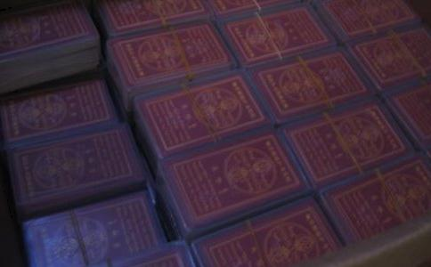

印经书、劝人
----- 诸葛长青
佛
佛弟子宏梨说：今天得到诸葛老师的鼓励，再结合自己这一年多的修行经历和体会，心中更是对放生，布施，诵经，持咒，食施等佛菩萨提倡的一切善行生起了更大的
一直想把修行和放生中的很多真实的
修行感应故事一：发愿印善书劝世人，忽然订单天上来。
这是在前年的10月份，当时佛友曙红给了我一本“
诸葛长青：阿弥陀佛，佛弟子宏梨，认真学习、发心印经书、功德无量，尤其是她能够坚定信心、立刻行动、持之以恒，值得天下有缘者学习。
当时那个月的生意特别清淡，我清楚记得那天是24号，我一算此月的产值是要亏损的！但是印书的念头特别强烈！当晚在夜静人深时我虔诚跪在三楼我宿舍的阳台上，对着天空发愿：大慈大悲的
能否请菩萨让我这一个星期多接点单？具体数量就按照某某公司这个月前24天下的订单总和吧……还是批量的订单，全部一起合总起来给我，她当然不知道我这样做的目的和用意了，但是她是个很乖巧的女孩，就照办了。
诸葛长青：阿弥陀佛，佛弟子宏梨为了劝天下人行善印经书，发愿得到一个订单。这个大愿一旦发出，立刻得到佛菩萨、
各位有缘者，如果你想赚大钱、有订单吗？
诸葛长青告诉你，太简单了，只要你发愿拿出10-20%放生行善，肯定会实现！你信不信，不信你就试试吧！
诸恶莫作、众善奉行，持续放生、有求必应！
各位朋友，结果到了月底，呵呵，不多不少，刚刚稍微超过我所祈求的数目，欣喜不已的我立即联系印书的厂家，之后曙红听说此事后，又联系了她的俩个佛友及她本人三人共
诸葛长青：阿弥陀佛，诸恶莫作、众善奉行，佛氏门中、有求必应，真实不虚！
修行感应故事之二：劝人学佛放生、资金忽然到手中
去年的十二月上旬某日，具体日期不太记得了，东莞平安保险的小唐给我送了一个镶着镜框的精美财神爷像到我办公室，坐下之后，聊起了
我听后非常诚恳地问他，我说小唐，我有办法让您改变您目前的不顺境况，问题是您信不信我指的路？
诸葛长青：阿弥陀佛，对于有机缘的人要尽力劝说他们行善。尤其是那些需要改变命运的人，更要劝说他们迅速放生行善，学会改变命运。佛弟子宏梨做得很好，她借助机缘对小唐进行人生开导。
阿弥陀佛，什么是度人？劝人心善积德就是度人啊。学佛的人要做到“自度、度他”。只知道自己
尽力劝人行善、放生，就是弘扬佛法，就是度化他人啊。当然，由于累世机缘不同，有的人你说一次他就听，有的人你说多次也不听。阿弥陀佛，度花他人需要智慧和机缘。度人，既可以改变他人的命运，又可以挽救生命，岂不是一举多得？
他说，大姐您是信佛之人，为人很和善，您说的话我当然相信了，您说有什么方法可以让我改善目前的情况呢？您直说我听听。
我当时和他讲道：人的福气，财禄，还有
而如果一个人常做恶事，他的福禄寿就会在原有的基础上迅速减少，相同的一个人如果常做善事，他的福禄寿也会在原有的基础上迅速增添了，所以这样的话算命的就算不准了，因为命运虽是生时就确定了的，但是它可以通过我们人自己的后天行为而改变，您想让自己命运改善变好，那么您就要学会多行善积德为自己增添福禄财寿了，道理就这样。
诸葛长青：阿弥陀佛，佛弟子宏梨用《了凡四训》的改命原理和故事开导小唐，是非常正确的。《了凡四训》值得所有学佛的人认真学习，该书全面讲述了命运是可以改变。有缘者可以从网上搜索、也可以书店购买。既有文字版也有电影版，非常好。
道教、佛教、儒教的核心思想是劝人行善。譬如道教的《
《
我可以提示一下您，小唐，放生是最快捷
诸葛长青：阿弥陀佛，劝人改变命运还要告诉他具体的方法，这样才会彻底改变命运。阿弥陀佛，佛弟子宏梨做的非常好！
因为放生具有“三种功德”于一身，哪三种功德？：一是财布施----花钱去买这些生灵的物命这就是财布施；
二是法布施-----给被放生的动物做
三是
诸葛长青：阿弥陀佛，凡是具备三种布施功德，就是非常大的功德！
放生为什么功德第一？道理就在这里。
此外，“施食”也是放生，也具有三大功德。
您回去认真看看吧。而后我多次接到小唐的来电，告诉我他正在放生，并且很憨厚地咨询我，他目前对被自己所放生的动物发不起同情心，这样放生有没有用，我如实告诉他只要您用心照
诸葛长青：阿弥陀佛，诸恶莫作、众善奉行，持续放生、有求必应，真实不虚！
古往今来，无数高僧大德、圣贤
就这样在我教小唐放生后的十来天后，小唐通知我，说邀请我参加他公司举办的年会。
我知道但凡银行或者保险公司举办年终答谢会时，一定会有营销性的理财计划推出的，所以我就直言相告，我说理财保险返本的时限很长，我们做生意的没有办法把流动资金拿来做这种投资，而且临近年底，该做的财务预算我们都已经有安排了，没有计划余钱去购买保险了。
小唐很诚恳地告诉我，大姐，我真的没有让您帮我买保险的意思，只是想请您过来坐坐，帮我争个人气也好。我听他这样说，就和女儿以及同修师兄万斌一起去了。到了会场，果不出我所料，一个理财专业人士正在情绪激昂地向到会者推销一个理财计划。
说实话，由于没有计划购买保险，所以我一直在内心不停地默念佛号，压根没有太多去听那位先生的理财演讲。
演讲结束后，很多到会者动了心，都现场签了购买理财的意向合约，这时我发现女业务员比男业务员占优势多了，很多业务员（女性业务员约占7成）都和现场签约的客户合影留念。而邀请我来的小唐正百无聊赖地在会场门前闲坐着，没客户签单当然很郁闷了。
突然的我心中涌起了一个强烈的念头，我想他已经算是一个初级修行者了，而这之前我一再告诉他每个人的运气都会随着自己的修善而改变得，而他因为才开始学修行，感应当然没有那么快，如果他没有耐心继续修行下去道心退失的话，那岂不是很可惜，为了让他不退转刚发起的修行道心，我决定向他购买一份几万元的小额保险，不为别的，就为了让他增添信心，继续修行下去。
我把想法对同修和女儿说了，他们都很赞成我的做法，于是我让万斌找到了小唐，告诉他我们愿意向他购买这份小额保险，他当时确实有点意外，但是也很乐意我们的相助。
诸葛长青：阿弥陀佛，佛弟子宏梨这就是真正的菩萨行啊，不仅现身
保险就这样买了下来，之后两天，我还在想这几万元的缺口。我看来要从别处想法填上才够年底支出了。谁料到在签约后的第六天，我突然就意外地获取了一笔资金！
数额刚好是我购买保险的数字，这笔钱来路合法，但纯属意外之财，在收到这笔钱之前我压根就没有想到会得到这笔钱，佛法殊胜不可思议再次让我赞叹折服！！！在我动善念帮助小唐时，佛菩萨就已经开始为我谋划这笔钱的补处了，试想我在帮人之时哪里敢有如此
诸葛长青：阿弥陀佛，持续放生，有求必应啊。
佛弟子宏梨真心学佛、真心放生、真心施食、真心帮助别人，佛菩萨、天地善神、财神是亲眼看到的！他们看在眼里、记在心里，马上启动宇宙财富程序，让护法神立刻选择有经济条件的善心者，把一笔财富送给佛弟子宏梨！！
阿弥陀佛，诸葛长青说过，你放生、施食、念佛的功德，会穿越宇宙存储在宇宙中。当你有什么祈求的时候，佛菩萨、护法神、天地善神就会迅速响应，帮助你解决问题。阿弥陀佛，这就是有求必应啊。
反过来看，很多人整天想发财、整天想干大事业，结果一点善事不做、一点好事不做，如何能实现目标呢？阿弥陀佛，只有行善的人才会有大成就啊！
有大成就的人一般两个因素：一是他的祖辈父辈行善积德多、二是他自己行善积德多。
诸葛长青认为，不管你的祖辈做了多少善事，最保险的办法就是自己多行善积德！
天道是什么？
诸葛长青认为：天道即是慈悲、天道是奉献、天道是舍得、天道是爱心、天道是
舍得舍得，不舍哪来的德啊！
这种事情说给人听或者别人未必会信，只有我这个当事人明白，这就是修善的好处，只要我们时时心存善念，身做好事，上天就一定会眷顾我们庇佑我们的。
诸葛长青：阿弥陀佛，佛弟子宏梨的现身说法，即是菩萨行，即是弘扬佛法的一种善行，也是功德无量！功德十分巨大。
做了善事善行，如果为了扬名、为了让别人佩服自己而到处宣传自己就不合适，但是为了弘法而宣讲善行是非常好的，有巨大功德。佛弟子宏梨的现身说法，就有很大功德！
就像明朝著名的“了凡”先生，如果他不把自己的行善改命故事和心得体会写成《了凡四训》，我们谁知道命运竟然是能够改变的呢？所以，有善行有感应的人可以用笔名写出自己的行善故事，启迪更多人。
佛弟子宏梨就是这样，诸葛长青认为，她就像当年的了凡先生一样，写出了自己的感应故事，本身就是弘扬佛法。
诸葛长青也给佛弟子宏梨提个建议，时刻记录自己的感应故事，十年、二十年之后，可以出一本书，书的名字可以叫做《宏梨
阿弥陀佛，倘若真的广为流传，那不是了不起的大功德吗？
只要我们的身、口、意、行都是善的好的，就算我们不求老天赐予我们福禄财寿等好的东西，但这些东西却因为我们的行为感召而来如影随行，不求自到！
就是一种
诸葛长青：阿弥陀佛，当年，伟大的
我也明白我师父所说的：“人也是有定数的，很多科学解释不了的东西，最终总是要回到佛教上来的”。
又比如：我说电线里面有电，你不信，让我拿出来给你看。我肯定是拿不出来的，但用手去摸一下，非把你打得跳起来不可。同样如此，我说世上有灵魂存在，你不相信，也让我拿出来看，我肯定还是拿不出来，这只有凭个人的感悟！好比电视遥控器，你只要调到哪个台，就会有节目看。你没有调到的台，并不可以武断地说：“没有节目看！”
灵魂亦是如此，没有看到，并不代表世界上没有灵魂的存在。我觉得福果老师说的这些话是非常经典也是非常有道理的！！！
希望各位对行善积德生起积极信心，力尽做到佛菩萨、印光等高僧大德提倡的“诸恶莫作，众善奉行”！
放生是我将持续不断一直要做到老的事情！所以就算哪天我不写博客了，呵呵，我一样会自得其乐地放下去的，在此也特别感谢新浪网让我看到并学到一些老师及师兄们的放生方法及修行方法，也希望自己能饮水思源知恩图报地把自己的学佛心得以及修行感应等真实情况在博文中详细地向各位读者朋友汇报，当然主要目的还是希望能抛砖引玉，让更多还不太了解佛法或者对佛法还未曾生起大信心的朋友做个以身说法的实例，如此而已，再次声明，修行之人不图任何虚名利益，此心纯净，苍天可鉴！！
也希望各位明白宏梨句句
阿弥陀佛，行善积德必有福报真实不虚啊！
诸葛长青祝福天下有缘者都来行善积德，都来造福社会，都富贵吉祥、心想事成！祝福天下有缘者有求必应、天官赐福、事业腾飞、财源广进！